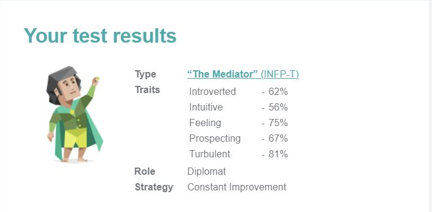
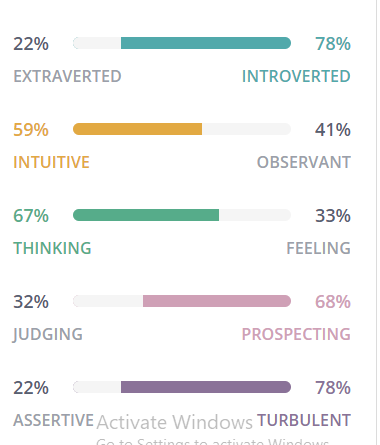
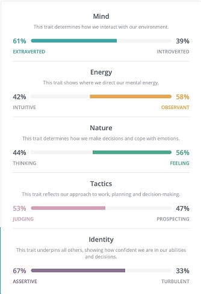
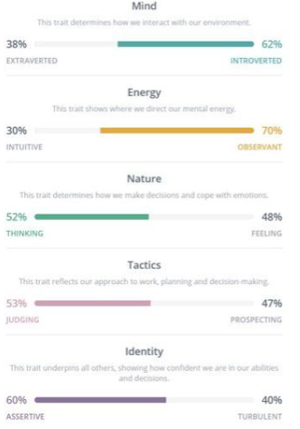

Mark was born in Sydney of Italian background, upon completion of his HSC in Griffith in 2015,
He is currently employed as a Health Information Officer at a private hospital in Melbourne.
Mark has always enjoyed IT. From playing computer games on his parents TV,
to selecting as many IT electives at High School.
Being from a fairly tech-savvy family also contributed to this interest.
Mark began a Diploma of IT after High School, and asked what was his main area of IT interest, he said:
“...network security and programming AI, especially for robots.”
Mark further added that these are the main areas he wishes to concentrate on during his studies.
“...careers in these fields are what I aspire to achieve.”
His hobbies include gaming, ball sports (particularly Rugby and Soccer), Music (Rock and Metal) and fixing cars.
Max, who lives in Cairns North Queensland, is a 25 year old student of RMIT.
He has previously studied a diploma at CQU and worked in the ADF.
His interest in IT started because of his father, who was an IT consultant working from home.
Hence Max was always surrounded by computers and servers.
Knowledge and interest in IT was accelerated during work in the ADF.
“… every second week there was something new;... radios, GPS, commanders tablets,
tracking and positioning gadgets, bore-sight tools were becoming more common place,
everything was starting to become more ‘digital.’”
After the Army, Max decided to study IT. He was drawn towards Information security and started some online courses,
such as Comtia Network and linux+ offered at sites such as Cybrary.it, EdX
and Udemy
With these courses Max started to become more interested in programming,
and started taking some courses in learning how to code using CodeAcademy.
“RMIT has a lot more programming on offer. In particular linux and C++ … [and these] were good selling points…
but I also hope to improve my GUI and graphical design...”
Zac is Australian who completed his VCE in 2018.
He then commenced an electrical apprenticeship.
This was not to his liking so now he is pursuing a career in IT.
Zac is very sports minded playing AFL, cricket and basketball.
Highlights include playing basketball in America against high schools, and playing AFL at the MCG and Marvel
stadium. He also enjoys video games with friends.
Zac’s interest in IT started in primary school when he received a DS console.
Since then he has kept up to date with the latest gaming technology.
His interest in IT today is very broad. Besides gaming, he likes learning about automation,
especially home networks. He also enjoys watching various “you-tubers” talk about technology.
But his biggest interest is centred on Tesla and Elon Musk.
The technology side of car automation and renewable energy.
One day Zac hopes to start his own business with the knowledge he gains from the RMIT IT course.
As Zac has said he specifically wishes to:
“...teach the fundamentals and basics that I have learnt to another person to make their life easier
with technology.”
Besides English, Lucky is fluent in Cebuano and Tagalog (both languages from the Philippines).
Ever since Lucky was young he’s had a passion for helping people in need.
This is exemplified by his choice of Nursing as a career, which he studied at RMIT.
He also has a liking for IT Technologies. These two can be married together.
As Lucky said:
“I have seen and used a variety of technology that assist humans[making]
manual task[s] easier”
His hobbies include playing computer games particularly: RPG, MMORPG, FPS games
Lewis was born in England and emigrated to Australia at age 11.
At High School he shone in science subjects especially Mathematics,
whilst outside the classroom he represented the school in soccer and chess.
Studying accountancy at night, in 1979 he became a member of what is now known as the
Institute of Public Accountants.
The following year he started an undergraduate Mathematics degree at Flinders University.
Whilst working as an accountant, Lewis was exposed to computer programming and from then on programming became somewhat of a passion.
This passion became the driver to enrol in the RMIT IT Degree.
Asked what it is about computer programming he likes, he stated:
“… personal satisfaction. It gives me immense joy when presented with a
programming problem and I ‘nut’ it out, and make things work.”
Other than family, his biggest love is his home town football club: Swindon Town Football Club (Nicknamed
‘The Robins’ because of their red shirts).
Lewis has been married for over 40 years and has one child.
More Information on Lewis
Peter Hodgkinson
Peter is an Australian Citizen, born and raised in Brisbane, Qld, in a family of ten children.
His grandparents came from Wales, England & Ireland. He completed Secondary School in Brisbane,
but has not as yet completed any tertiary studies.
Peter leaned to fly light aircraft many years ago and had dreams of becoming a Qantas 747 Pilot like his Brother,
however his life took a different path and he spent many years working in Sales/Account Management & Marketing
for various industries, including Hospitality, Building & Construction and Information Technology.
Peter has been interested in IT ever since he was young boy, watching cartoons, such as “The Jetsons” and
“Dick Tracy”, which forecast technology (ie Dick Tracy’s watch – video calls).
Peter was involved in the Marketing of Cable TV, Chromecast and encryption Services etc.
But in 2019 he decided to become more involved in the technical aspects of the products.
This lead to study of IT at RMIT. He also believes these studies:
“...will be able to further enhance my skills in Time Management, Problem Solving,
Teamwork and Conflict Resolution.”
Peter’s main hobbies are keeping fit and Singing in a band, which he enjoy immensely.
Team “Quik Biz” has kept the same communication process going for Assignment 3 as we did for Assignment 2.
We believe this to be the most efficiency process. Our groups primary technique for communicating was our
scheduled biweekly meetings hosted in Microsoft Teams (MT).
During the first meeting of our group back in Assignment 2, all the team members agreed we would have at
least two meetings per week, usually on a Monday and Thursday. Of all the meetings in both Assignment 2 and 3
there have only been 2 apologies, which is a sign of our positive commitment to the project and our processes.
Whilst there have been informal communication between team members this has always been conducted within MT,
and this correspondence is freely viewable to all team members. MT streamlined the communication process.
Written work was also shared within the MT platform. This work was then uploaded into GitHub or incorporated
into the PDF file(s) in the appropriate format. Assembling the teams written work into this one central
location allowed all team members to communicate their concerns/comments.
The above processes also allowed our group leader, Lewis, to more easily delegate tasks between the group.
This made his leadership role much more time efficient. We discussed our strengths and weaknesses in our
meetings and made sure everyone was comfortable with the tasks they were asked to do.
Career Plans
Desire! That's the one secret of every man's career. Not education.
Not being born with hidden talents. Desire." (Carson nd) [Source]
Ideal Job
Quik Biz team members have not changed their ideal jobs from Assignment 2,
which in turn had not changed from Assignment 1.
Team members preferred (ideal) job are:
Team Member
Job Title
Job Characteristics
Lewis Dean
SQL Analyst Programmer
May be a ‘contract ‘employee for a fixed time, but more likely be a normal Employer /
Employee relationship. Fixed office location with minimal customer contact.
Mark Parisotto
Penetration Tester (System Assurance)
Self Employed. Will be a sub-contractor to whoever needs systems checking/vetting.
Variable locations of work, high degree of customer contact. Amount of work depends on Mark.
Peter Hodgkinson
Application developer
May be a ‘contract ‘employee for a fixed time, but more likely be a normal Employer /
Employee relationship. Fixed office location with minimal customer contact.
Lucky Rubenecia
Software Developer
May be a ‘contract ‘employee for a fixed time, but more likely be a normal Employer /
Employee relationship. Fixed office location with minimal customer contact.
Zac Foulds
Self Employed IT Field Technician
Self Employed in a franchise relationship. Will visit customers homes, similar to “Geeks2U”.
Variable locations of work, very high degree of customer contact. Amount of work depends on Zac.
Max Trounce
Software Engineer / Developer Programmer
May be a ‘contract ‘employee for a fixed time, but more likely be a normal Employer /
Employee relationship. Fixed office location with minimal customer contact.
Ideal Jobs Summary:
Most of the team are unsure of the industry they prefer, Most of the preferred jobs are your
traditional employer/employee relationships in a fixed office environment. However two jobs
are best described as freelance, sub-contractor or franchise type employment where work is in
multiple locations and the team member remains his own boss.
Job Skills (requirements)
The major job skills associated with the above preferred (ideal) jobs are:
Skills
LD
MP
PH
LR
ZF
MT
Communication
Yes
Yes
Yes
Yes
Yes
Yes
Documentation Writing
Yes
Yes
Teamwork
Yes
Yes
Yes
Yes
Yes
Yes
Work independently
Yes
Yes
Software Design (Programming Skills)
Yes
Yes
Yes
Yes
Systems Testing
Yes
Yes
Data Manipulation
Yes
Yes
Experienced
Yes
Yes
Australian Citizen
Yes
Education
U-IT
U-IT
U-IT
U-IT
U-IT
Mast
Criminal History Check
Yes
U-IT = Undergraduate degree in IT
Mast = Master Degree in IT
Skills Summary
As can be seen from the above table, all the ideal jobs insist on a number of core skills.
The most prominent being communication and the ability to work in teams.
Although one job does require working in teams plus the ability to work independently.
56% of jobs requires good communication and interpersonal skills while 33% require
‘excellent communication skills’ [Source]
After this, the jobs tend to specialise. Most require programming skills, one predominantly
requires system testing abilities and one centres around in-home customer support.
Education Requirements
We believe an undergraduate degree is a ‘minimum’ for all the preferred positions.
One position however, insists on a Masters Degree.
Career Paths
With the teams preferred jobs not changing from Assignment 1 and 2, all team members see
no reason to change their career paths from those discussed in Assignment 2. They are:
Team Member
Career Path
Lewis Dean
Immediate goal is to complete the undergraduate degree.
Lewis considers this sufficient to be able to apply for his ideal job.
Mark Parisotto
Marks career path involves firstly completing the IT degree with emphasis on Networks,
then gaining the necessary qualifications (CREST and OSCP) to be able to apply for his ideal job.
Peter Hodgkinson
Initially Peter wishes to complete his undergraduate degree.
Concurrently with this he wishes to develop a mobile app for his wife’s catering company spudsisters.com.au.
gaining an understanding of the creation, development and life cycle of these applications.
He aims to identify a niche, through his volunteer work, through Alfred Health,
in Melbourne.
He has always had an interest in the community services sector and
through his volunteer work, he will endeavour to identify ways in which
Mobile Applications can be developed to assist doctors with managing their
patients needs.
Lucky Rubenecia
Lucky has completed has already completed a Diploma in Nursing at RMIT.
After completing the IT degree at RMIT he intends to continue to understand
Software Development and the fundamentals of Information Technology.
Zac Foulds
Loving technology Zac has developed a knowledge in different ranges of
IT including Mac, IOS, windows and data
He completed a year of as an electrical apprenticeship so has a lot of
knowledge regarding installing data points and racks, essential for home support.
He plans to complete his IT degree and continue his own research into home
electronics, and do small jobs for friends.
Max Trounce
Max will need to finish his bachelors here at RMIT.
Upon completion he wants to do Honours in software engineering likely at a
different University as he is unsure if RMIT has this option,
although he is aware that QUT does.
After Honours he would then either attempt to enter the workforce as a
junior software engineer in order to gain some hands on and real-life
experience that he needs to acquire before applying for the ideal job,
or he may commence a master’s the year after. Considering the job,
an Honours and Masters Degree in either software development,
cyber security, or artificial intelligence would likely be his best course of action.
This pathway so far is likely to take at least 6 years of uninterrupted
full-time study provided that all units are passed and completed on time.
Career Paths Summary
Initially all team members wish to complete their undergraduate degree. After this they
plan different strategies. These range from no further studies to completing an Honours
degree and a Masters degrees. All but one of the team see a need for some form of further
study after the undergraduate degree.
Team Members Final Reflections
Team Member
Reflection
Lewis Dean
Lewis would like to thank Mark, Peter, Lucky, Zac and Max for being a great bunch to work with.
He wishes them all the best for their future careers. What went well:
• Process. Whilst all team members wrote different aspects of the project it was important that when
these were combined it came together into one coherent article. Given the risks of this approach,
Lewis felt this was the teams best achievement.
• Output. Lewis felt the quality of our output was exemplary. What could be improved:
On a personal level, Lewis thought his leadership performance could have been better. He missed the
due date of Assignment 5 (Video Submission) which put undue pressure and stress on all team members
in delivering Assignments 3 and 5 on the same day. As a consequence, the team missed the submission
date for the storyboard. What was surprising:
(same as A2) Lewis had a ‘misplaced’ perception of the maturity and ability of the younger generation.
But all the team members surprised him with their confidence, maturity and ability. He considers
their command of IT (especially Apps) is mind boggling. What have I learned about Groups:
(same as A2) Lewis felt it’s difficult to say to one of the group that you think their efforts can be
improved (English expression etc.). How do you tell them? Choice of words are so very important.
You have to be aware of their sensitivities. This can be difficult in a team that is still trying to get
to know one another. Fortunately, he felt all members of our team reacted positively to suggestions.
But he felt the corollary is a bigger issue – to shy away from telling them, either by leaving work unchanged
or not telling them of the change. Either way Lewis felt that shying away causes more issues than being honest
up front. Lewis concluded
"...it all comes down to the main issue that permeates the whole of this I.T. course. Namely:
Communication / Communication / Communication”
Mark Parisotto
Peter Hodgkinson
Lucky Rubenecia
Zac Foulds
Max Trounce
Project idea traveller booking application
Overview
topic
Overview of the project, Big picture not outcomes, atleast 2 paragraph min
Motivation
why make this project? how does it relate to current IT trends? what would it show an employer if you worked on it? (- 1 paragraph min
Landscape
what similar systems/products exist? what competition is there? what is different about our project then theirs (- 1 paragraph min
Detailed Description
Aims
general overview of what we are doing, list goals / if any that you need to succeed - what are the most important parts
what parts get priority? ( - atleast 1 paragraph for aim and 1 paragraph for every aim and justify goals / aims
Mark has always had a strong interest in IT, starting at a young age when he used to play flash games on his parents computer.
Over the years his fascination grew leading him to take IT electives whilst in highschool which led him to study a diploma of IT once he graduated.
Marks Interest in IT is centered heavily around Information security and programming with an expressed interest in programming of intelligent systems.
Personality Type

Mark is a Mediator and a tactile learner, the mediator personality is indicative of people who may seem quiet
or unassuming at first although they often have vibrant private and social lives.
Idealistic and their natural care for others leads them to pursue deep meaningful relationships and they are
always happy to help others in need. Mediators can often feel as if their lives are lacking in direction and
purpose, for many this purpose lies within the realm of assisting others while they are aware that the world
will never be perfect, however they still care in assisting to make it a little better.
As a tactile learner Mark learns in a “hands on” way, preferring to touch, build, draw or otherwise act out
what the skills are he is attempting to learn. It is recommended that he is active and take frequent breaks,
tactile learners are more likely to use their hands and make gestures when speaking and can have difficulty in
remaining seated for extended periods of time, hence why it is recommended for them to take regular breaks.
Test Result Reflection
The results of the tests mean a fair bit to mark, he states that they are always a good indicator of what your
true personality is. In particular the Myers-Briggs test really goes into detail about how your personality
affects your day to day life and gives a good insight into personality traits which he did not know he had.
Because of this reason, mark believes that everyone can benefit by taking one or more of these tests in order
to potentially learn something new about themselves as long as they are honest about their answers to the
questions on the test.
Mark believes that the personality traits he posses and the traits that have been reflected in his test results
allow him to work well within a team, the personality type: Mediator, is an integral part of any team as they
are able to assist in peacefully and fairly resolving conflicts when they arise. As a Mediator mark believes
that he is capable of forming and taking opinions from both sides and will be able to effectively keep
everybody on track with their tasks.
Max has had an Interest in IT since he was quite young, his dad worked as an It consultant so he grew up in an
environment where he was exposed to a number of different systems from an early age. His curiosity grew until
he joined the army in 2012 where he was exposed to the full scope of what encompasses the umbrella term of “IT”
having to learn and become proficient in utilising new radios, gps and other military technologies his interest
peaked and he decided to leave the ADF and pursue a career in Information Technology
Personality Type
Max is a Logician and a visual learner. Logicians are people who love patterns and technology.
Often they have abstract ideas,which can seem counter-intuitive at first glance however generally these ideas
prove to be remarkable innovations, Logicians can often become so caught up in their own train of thought that
they can forget to consider the emotional side of things, this is often perceived as a lack of sympathy and is
often attributed to them being considered inconsiderate by their peers. Max agrees that often he can become
caught up in his own thoughts so much that he over analyses the problem and can miss the point entirely.

As a visual learner Max is more prone to learning quicker if the information or tasks required are presented in a written or picture form, instead of verbal, or hands on.
Visual learners learn quicker when they create their own diagrams and pictures to explain or represent the information.
They should try to study or learn in an environment that is free from visual distractions and should use different fonts,
styles and colors for different meanings when studying and taking notes.
Test Result Reflection
Max agrees with the results of his tests for the most part, however he has stated that he is unaware of any other personality types.
After reviewing his results from the tests max believes that his traits are not Ideal for working in a team his introverted personality and constant overthinking are likely to hinder
his performance and make him unlikely to present his ideas to the group. Max states he has difficulty explaining and articulating his ideas and opinions and can become easily frustrated when
others do not understand his ideas. Max disagreed with some of the personality traits he was given with his results, in his opinion he is not necessarily very creative, and says he has difficulty
in coming up with ideas for stories and has terrible graphical skills (such as drawing). Max also considers himself more of a practical learner instead of a visual, believing he will only ever truly
learn how to do something once he has gone through the motions many times.
Zac has been Interested in information technology since he was quite young when he received a Nintendo DS gaming console.
Since then Zac has kept up to date with the latest in gaming technology, his interest in Information technology is quite broad,
ranging from gaming and renewable energies to artificial intelligence and automation technologies such as those being developed by Tesla.
Zac also enjoys watching technology centric youtubers and wishes to start his own IT business one day.
Personality Type
Zacs Personality type from the Myers- Briggs 16 personalities test is that of a “Consul”.
Consuls are highly sociable people with large and vibrant social lives, they enjoy supporting their loved ones and organizing and attending various social gatherings.
Consuls are altruistic in nature, they take their obligations and responsibilities to do the right thing very seriously, often their moral compass is based heavily of authority,
established laws and traditions instead of mysticism or philosophy,
because of this consuls can sometimes forget that people come from different backgrounds and that their perception of right and wrong may differ from others.

As a tactile learner Zac prefers to learn in a hands-on and practical manner this is likely due to his highly active lifestyle and hobbies.
Zac enjoys experimenting with things and will go through the motions of a task learning from his failures along the way.
Test Result Reflection
The results of Zacs test are indicative of his extroverted and highly active lifestyle, he admits he is a “talkative and engaging” person.
Zac believes that the test results indicate he would work well in a team,
his personality allowing him to be assertive in his views whilst also allowing to take other ideas and views into consideration. Zacs agreeableness,
positivity and planning capabilities are highly sought after skills to have in any group,
allowing him to encourage others to work to the best of their ability whilst ensuring that tasks are being organized and allocated in a fair manner.
Lucky has been Interested in It since he was a young child, he has also always been compassionate and during his time as a nurse was exposed to a wide array or technologies t
hat assist in a variety of medical procedures, these technologies make manual tasks easier, and safer for everyone.
Lucky decided to combine his two passions (Medical and IT) in hopes of one day becoming a software developer for medical applications.
Personality Type
Lucky is a Logistician and a Visual Learner, which is common amongst Logisticians.
Logisticians are highly logical and practical people combining this with their tireless dedication to their work and personal lives make them a great addition to any group setting.
Generally, people with this trait do not make assumptions, they prefer to analyze the information and data presented and arrive at what they perceive to be the most logical and practical solution.
Once a solution has been reached, they can often be uncompromising in their views especially if the task at hand relies upon a timeline or a schedule.
Logisticians are curious people who strive to learn everything they can about their area of interest, their sharp minds prefer autonomy instead of relying on others.

As a Visual learner Lucky is more likely to learn through reading and watching.
Lucky has stated he prefers to watch Instructional type videos on how to do something for him to properly understand what exactly is being talked about.
As a visual learner he should strive to study in an area free of visual distractions and should attempt to use different colors and pictures when taking notes if possible.
Test Result Reflection
Lucky believes that the results for his tests are quite accurate, they are indicative of his personality and this can somewhat be reflected in his prior career choices.
His high level of empathy and compassion allows him to consider and sympathize with the arguments and concerns of others in a group setting clearly.
As lucky is a Logistician a personality type that is often diligent and dedicated to their work he is capable of performing tasks either by himself or as a team in a collaborative effort.
Overall Lucky believes that the traits he has would be a positive addition to the group and that the results of his testing is accurate.
Lewis gained an interest in IT when he started working as an accountant in the finance department of ZZZ.
He was the first person at his workplace to learn the macro programming ability of 123 and Excel (VBA).
His workplace skills quickly became a beloved hobby and he started to teach himself how to write other programs and use breadboards such as the Adruino and the Raspberry Pi,
eventually Lewis decided to pursue a bachelor’s degree which led him to RMIT.
Personality Type
Lewis is an Adventurer and a Tactile learner. The explorer personality trait is indicative of those who are Observant,
feeling and Prospective in nature, they are true artists at their core but generally in an unconventional way they gain pleasure in pushing the limits of social norms and conventions.
Adventurers live in a world inspired by connections with people and take joy in reinterpreting these connections by experimenting with them and considering new perspective,
this combines with their natural spontaneity, often makes them seem unpredictable even to those who have close personal relationships with them.
As another tactile learner of the group Lewis learns best by taking a practical and methodological approach to learning,
the need to go through the motions, make errors and then learn from them is an integral part of learning for the tactile learner.
Lewis finds that in long lectures and reading material he can “switch” off and is more of less watching rather than doing anything stating he “learns best by doing”.
Test Result Reflection
Lewis believes that the results of his tests are somewhat accurate, he agrees he has an adventurous nature and is observant and prospective,
and In his younger years he was quite outgoing, contradicting one of the perceptions from the Briggs-Myers test stating that adventures are Introverted people.
However this appears to be the only discrepancy with the tests Lewis took, he also completed an IQ test and received a score of 105-120 putting him above the national
average of 99.2. Lewis states that his test results state or indicate that he should not be a leader however he states that his most enjoyable and productive time at ZZZ
was when he was managing the finance IT team, sometimes the test results miss certain things and others a person who undertakes the test may have results that are very
close to putting them within a different classification and this may be the case for lewis.
Peters Interest in IT developed while he was a young child, and stems from watching cartoons such as
“The jetsons” and “Dick Tracy” both of which were popular shows during the 1970s, Peter notes that since these shows where originally aired a few decades ago
and where perceived as futuristic type shows that some of the technologies represented are now available and widespread today. Peter was inspired to commence his
studies at RMIT during his last career change when he was considering a career change. This career change led him into a role that has a larger technical capability
and provided a many technical services such as: Digital signage, Encryption services, internet and Interactive services and many more for aged care facilities across
the Asia pacific area.
Personality Type
As a protagonist peter is naturally a charismatic leader this is evident in the fact that he has held very senior positions at large companies for many years,
often protagonists are politicians, coaches or teachers they take pride in their work and their confidence assists in inspiring
those around them to achieve their own goals. Naturally they find it easy to communicate in an articulate manner ensuring everybody can fully
comprehend what they are saying, protagonists have an uncanny ability to be able to understand the emotions and motivating factors of others this combined with
their altruism and authenticity make them an excellent coordinator and manager of projects they are highly valued in any group setting.
Peter is also a tactile learner and learns in a hands on approach he prefers to and enjoys trying new things and attempting to find his own way of discovering
how things work, through trial and error.
However peter states he also doesn’t mind simply reading instructions or watching instructional videos on how to perform a task.
Test Result Reflection
Peter believes that the results of his tests do accurately reflect his personality, as he is driven and focused on getting results,
his communication skills and empathy towards others combined with his leadership experience and his natural ability to gain other people confidence quickly
are invaluable skills for any member of the group to have. Peters ability to lead, accept responsibility and motivate others are highlighted in the results
of his tests. Peter did note that he should specifically search for group members with certain different personality types and traits that would compliment his own,
this did occur to some degree. Overall peters leadership experience combined with his intuition and optimism are sure to greatly benefit the group